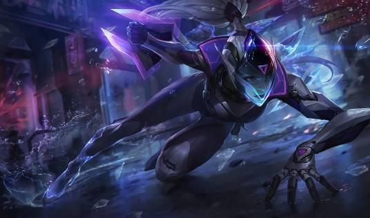

League of Legends (LoL), commonly referred to as League, is a 2009 multiplayer online battle arena video game developed and published by Riot Games. Inspired by Defense of the Ancients, a custom map for Warcraft III, Riot's founders sought to develop a stand-alone game in the same genre. Since its release in October 2009, League has been free-to-play and is monetized through purchasable character customization. The game is available for Microsoft Windows and macOS. In the game, two teams of five players battle in player-versus-player combat, each team occupying and defending their half of the map. Each of the ten players controls a character, known as a "champion", with unique abilities and differing styles of play. During a match, champions become more powerful by collecting experience points, earning gold, and purchasing items to defeat the opposing team. In League's main mode, Summoner's Rift, a team wins by pushing through to the enemy base and destroying their "Nexus", a large structure located within. League of Legends has received generally positive reviews; critics highlighted its accessibility, character designs, and production value. The game's long lifespan has resulted in a critical reappraisal, with reviews trending positively; it is considered one of the greatest video games ever made. However, negative and abusive in-game player behavior, criticized since the game's early days, persists despite Riot's attempts to fix the problem. In 2019, League regularly peaked at eight million concurrent players, and its popularity has led to tie-ins such as music, comic books, short stories, and the animated series Arcane. Its success has spawned several spin-off video games, including League of Legends: Wild Rift, a mobile version, Legends of Runeterra, a digital collectible card game and Ruined King: A League of Legends Story, a turn-based role-playing game, among others. A massively multiplayer online role-playing game based on the property is in development. League of Legends is the world's largest esport, with an international competitive scene consisting of multiple regional leagues; they culminate in an annual League of Legends World Championship. The 2019 event registered over 100 million unique viewers, peaking at a concurrent viewership of 44 million during the finals. Domestic and international events have been broadcast on livestreaming websites such as Twitch, YouTube, Bilibili, and on cable television sports channel ESPN.
League of Legends' player base has a longstanding reputation for "toxicity" which is negative and abusive in-game behavior, with a survey by the Anti-Defamation League indicating that 76% of players have experienced in-game harassment. Riot Games has acknowledged the problem and responded that only a small portion of the game's players are consistently toxic. According to Jeffrey Lin, the lead designer of social systems at Riot Games, the majority of negative behavior is committed by players "occasionally acting out". Several major systems have been implemented to tackle the issue. One such measure is basic report functionality; players can report teammates or opponents who violate the game's code of ethics. The in-game chat is also monitored by algorithms that detect several types of abuse. An early system was the "Tribunal" players who met certain requirements were able to review reports sent to Riot. If enough players determined that the messages were a violation, an automated system would punish them. Lin said that eliminating toxicity was an unrealistic goal, and the focus should be on rewarding good player behavior. To that effect, Riot reworked the "Honor system" in 2017, allowing players to award teammates with virtual medals following games, for one of three positive attributes. Acquiring these medals increases a player's "Honor level", rewarding them with free loot boxes over time.



League of Legends is a game that has recently gained popularity among players from around the globe. People are organizing tournaments and competitions and some of them even have daily training sessions. Of course, this might sound like something unhealthy and bizarre but the truth is that playing League of Legends has many advantages.
As you can see, although the popular belief is that playing games especially League of Legends is a complete waste of time, the truth is that this game has many advantages, especially when it comes to our health. Playing League of Legends daily cannot produce any negative effects if it is practiced for a reasonable time. A reasonable time spent playing, means that it won't interfere into your everyday obligations and activities.